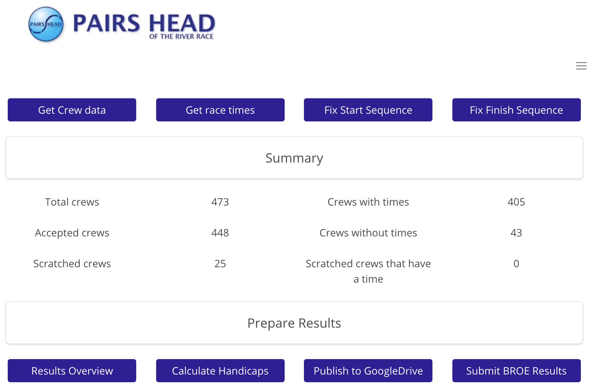

Sian Alcock
Web Developer, London
Profile
After working in a software development environment for many years, I am excited to be changing direction and pursuing a role as a Developer.
My goal is to work in a dynamic, ethical organization that will help me consolidate my skills and where I can contribute to the creation of ground-breaking coding solutions.
Technical skills
JavaScript
React
HTML5
CSS3
SCSS
Axios
Bulma
Git
GitHub
Yarn
NPM
Express
Node.js
MongoDB
Mongoose
Python
Django
PostgreSQL
Mocha
Chai
SuperTest
Development projects
Pairs Head Results - extended side project
Following on from my fourth project at General Assembly. This is a real-world application that will hopefully be used to generate results for the Pair's Head Rowing Race in October 2019.
 Readme / Repo DeploymentPairs Head Results
This is a fullstack application built by me as my fourth and final project at General Assembly over 7 days. It uses Django/Python/SQLite on the backend and React/JavaScript front end. It's purpose is to automate the preparation of results for the Pair's Head of the River Rowing Race which is held in October every year.
 Readme / Repo
Deployment
Readme / Repo
Deployment
Lost the plot
For our third project at General Assembly, we were placed into groups of 4 developers and charged with building a fullstack application using Express/MongoDB backend and React/JavaScript frontend. The idea behind the website is to give users a means of finding green spaces / allotments / community gardens in London with the goal of growing food.
Readme / Repo DeploymentSuper-heroes - 48 hour hackathon
This project was a hackathon. We were put into pairs and asked to build a website using React/JavaScript. The website had to consume a public API. We chose Superheroes as our theme and found an API that listed 720 Superheroes.
Readme / Repo DeploymentCrop Capers
My first project at General Assembly was to build a grid-based game on my own using JavaScript over 7 days. I created a fun game called Crop Capers which was based on BattleShips. Instead of seeking out and destroying battleships, the player seeks out and digs up crops.
Readme / Repo DeploymentExperience
June to October 2019
General Assembly - Software Engineering Immersive
This challenging and intensive 12 week bootcamp covers fundamental programming and computer science knowledge, as well as experience with languages, frameworks, and libraries.
August 2018 to April 2019
Round the world travel
This global adventure took me and my partner to ten countries. Check out our blog here (not developed by me...)
December 2000 to June 2018
Director, Co-founder Citicus Limited
I co-founded and directed a software company to develop and sell world-class security, risk and compliance management software, plus supporting services.